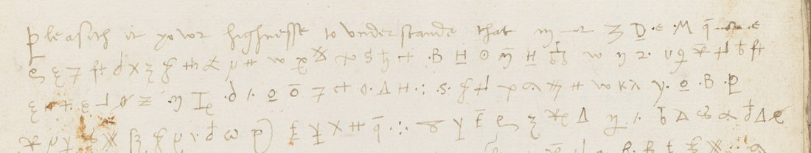
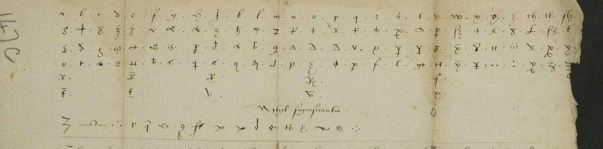

At a glanceExternal key matched · none (key obtained, text not read)
- The letter
- Dr Nicholas Wotton, Mary I’s ambassador in France, to the Queen, Soissons, 13 June 1554, about 118 lines of cipher.
- Where
- British Library, Harley MS 1582 ff. 8r–10v; DECODE R8499, listed as “N. Wottoy ?” to an unknown recipient with no decryption.
- The cipher
- A homophonic alphabet, a row of nulls and some 140 code signs for Carew, the rebels, the Constable, the French king and others, in graphic signs.
- How it was read
- The key is DECODE R354 (TNA SP 106/2 f. 162, “France 1554”), filed in another series. After eight passes, 75.0% of 2,801 non-null signs decrypt firmly and 89.4% counting tentative values.
- What it says
- Carew is at Compiègne with the French king; the king has raised the rebels’ pensions; a repentant rebel met secretly in Paris asks the Queen’s pardon.
- Still open
- About forty rare code signs absent from the only surviving key; a contemporary deciphered copy at ff. 5r–7v is not digitised.

01 The letter and the key
R8499 has six images: ff. 8r, 8v, 9r and 10v of Harley MS 1582 and two binding views. The hand is Wotton’s, the address is to the Queen, and the close reads “And thus I beseech Jesu long to preserve your highness”. The body is cipher, about 3,200 signs, with clear-text pieces between the runs (“the king being then in his journey … the Court resting as yet nowhere”, “declaredde unto him your highness pleasure”). The letter is not in the Calendar of State Papers Foreign, Mary, which gives only Wotton to Petre, Soissons, 14 June, and later letters to the Queen from SP 69.
The key is DECODE R354, a single sheet in TNA SP 106/2 f. 162 headed “France 1554”. It gives three to six homophones for each letter, a row of nulls (“Nihil significantia”), and a nomenclator whose entries fit Wotton’s embassy that spring: the Emperor, the Queen’s Highness, the French king, the Constable, Peter Carew, the rebels, my Lady Elizabeth, the Earl of Devonshire, the Prince of Spain, Strozzi, Siena, Guisnes, Calais, the Low Countries, “fair words”, and short words (and, the, of, to, was, shall, have, hath, it, is). The signs and nulls of R8499 are those of R354.

02 The decrypted phrases (decoded, not read)
The phrases below are taken in order from the reading column of the line-by-line decryption, final_v9.txt, with modern punctuation and the spelling as decrypted; … marks the stretches between them that do not give English. Square brackets with a number mark signs not decrypted; words in italics are tentative (grade C or M). They are not a reading: only about one sentence in ten of the decryption holds as English (10 of 98, 23 October 2026).
f. 8r: Carew at Compiègne
Pleasing it your highness to understand that Carew was at Compiegne and spake of with the French king, the rebels, with the Constable, and Carew. I am enformid Carew saith [1] he have had meny gentle and fair words … the Constable tooke it [4] that the French king had gyven him … and where Carew requyred that the band of the rebels should have the Emperor’s wagis … the Constable comenid with him how the ysle of Wight might be taken [13] most, and how it might be kept. The rebels finallye, Carew [also] advertisith me, they have concludid that … to attempt against your highness … the Prince of Spain’s coming … in the Low Countries … He the French king hath encreasidde the pensions of dyvers of the rebels … of the Cardinal Farnese, who shewing him much favour … two hundred … crownes and nothing other, likewise … offerid fowre hundrid and the leading of a band, yf him list, as he saithe.
f. 8v: the rebels’ plans
The rebels may dwel in France where they be, and the Emperor’s pensions to continew til the time the French king may restowr them to the Emperor’s countre … the Emperor’s ambassador sent me word that whereunto cam of late a servant of Carew to him out of the Low Countries, who shall that certein gentlemen home send him word that … in the west partis they … to take part with them … and that they [1] take Plymtown [5] and keep it rady … The king being then in his journey, the Court resting as yet nowhere, so as I could … I wold first make a step to Paris ere I went, to talk secretly with … and to advertys him of your highness’ mind … I found the meanes to talk with him in a [2] place and declaredde unto him your highness’ pleasure concerning him … he must first speak with Carew ere he could take [1] to him. The effect of his answer was these: first … the resolucion taken betwen the Constable and Carew [6] … the Constable, being enformedde that Carew was departid [from] Compiegne, satisfied, had sent the lord [16] to him to … meny fair words, and to shewe him that the rebels’ band shulde have theyr wagis.
f. 9r: the repentant rebel
… for lack of money … charges offred, and he would not entre in service to the French king … he did receve money of him, he could not find in his heart that they be untrew to him; and besides that, he doubting lest it be known that he gyveth me advertsmentes … would be gladde to depart this shortly; and although he sayde he took me to be an honest manne, and therfore did not mistrust my wordes … what kind of effect your highness wolde requyre of him to be done … that it were perceived that he wente abrode to attempt the Emperor against the French king … he came not fynde in his herte to return into England. He thinkith that your highness can not forget this offence … and in case your highness could forget it, yet he reckening assuredly that the French king will [not] forget it … so that, being persuadedde that he can not lyve in England without [pardon] of this, he entendeth not to return … that it would please your highness to give him … and suffer him to have a gentlemanes lyving in [2] countrey … He entendith not to open the circumstances of this fawte … if he must detect meny gentelmen, who, remaining unknown, may live honestly at home.
f. 10v: Cornwel, the lantzknechtes, Saint-Quentin
This is th’effect of … He shewed me that one Cornwel is rover to late and … I have not yet spoken with him … the said Cornwel … For he doutith whether he may trust him, for he was longing to the lord [4] … There is one who calling him self Greneberye, who hath been twyse offred … the first tyme they toke him for a spye … and besides that, this felaw who cam with him the first declared to Carew what he was and where … the Emperor’s sisters; Carew namid to be twenty enseignes, and lye abowte Laon, of new lantzknechtes … not the third part … passid within a myle of this towne fifty and nine canone. It is told me that … Paris, and it semith to take the way towardes Saint Quintin … what the Emperor’s intent is, is kept [2]. It is thought that the French king will be in the camp him[self] … whether the Emperor be strong to meete them. The Constable hath ben sike and is not yet [1] strong. The Duke of Gwyse [7] … And thus I beseech Jesu long to preserve your highness …
03 Method
- Identification. The opening and close in clear name the Queen; the hand and the signature fix Wotton; the BL catalogue record and the Harleian catalogue of 1808 give Soissons, 13 June 1554.
- Transcription. A first sign transcription (3,212 signs, 158 types) was made before the key was found. A homophonic annealer on the
en-1640smodel, validated on synthetic controls, failed blind: the nulls and word codes defeat it. - Key. The key sheet R354 was found on DECODE among the SP 106 keys and transcribed (
key_R354.md). With its nulls removed and its letter and code values fixed, the text began to give sense (“Compiegne and spake of … the rebels with the Constable”). - Re-transcription. Several first-pass tokens merged distinct key signs (ω d and and; the French king and “your highness”; the barred and plain x). They were split sign by sign on the images (v2), then every page was re-transcribed at full resolution (v5).
- Unified key and nomenclator. Page-by-page keys were merged into one (v6), all ~140 nomenclator entries were transcribed and tested against every unread stretch (v7), and a shape pass separated the upright and arched triangles and the barred and plain C (v8).
- Measure. Each pass was counted on non-null signs: 47%, 65%, 72%, 75%, 75% firm. The last two passes added no firm values.
| page | non-null signs | firm | incl. tentative |
|---|---|---|---|
| f. 8r | 734 | 66.6% | 86.1% |
| f. 8v | 683 | 75.1% | 90.0% |
| f. 9r | 709 | 81.8% | 90.6% |
| f. 10v | 683 | 76.9% | 91.4% |
| all (v8) | 2,801 | 75.0% | 89.4% |
(The page rows are the v7 count on 2,809 signs; v8 removed two doubly transcribed signs and relabelled others without changing the totals.)
04 What remains uncertain
- Checked again 23 October 2026. Every DECODE record of Harley MS 1582 was opened (R8009, R8010, R8498–R8505); none holds ff. 5r–7v, the contemporary deciphered copy (R8010 is a duplicate of R8505, ff. 263r–264v). The British Library’s catalogue now records the volume as digitised (ark:/81055/vdc_100162940894.0x000001), but its images have been unavailable since the 2023 cyber-attack; when they return, ff. 5r–7v can be fetched without an imaging order. A further pass on the same images and key cannot close the open stretches, so the letter stays decoded, not read.
- Re-measured 5 October 2026. The figures above count signs that have a value. A sense measure (
measure_sense.py) subtracts readings that make no English (160 signs on 52 lines): 68.9% of the non-null signs on the final transcription v9 (p. 1 56.5, p. 2 73.3, p. 3 75.5, p. 6 71.0; the value count is 74.7%). Open and nonsense stretches are about 31% of the signs (p. 1 l. 13, l. 24 (fy)ve hundrid, p. 2 l. 25, p. 6 ll. 13–14, p. 3 l. 14). The contemporary decipherment, Harley MS 1582 ff. 5r–7v, is not digitised. - About a quarter of the non-null signs are not decrypted or are tentative: short runs on f. 8r (lines 13–15, 18, 24), the name after “the lord” on f. 8v (16 signs; perhaps “Brymstane”, Crichton of Brunstane, a Scot: M), the name after “the Duke of Gwyse” on f. 10v (“Gaspard”?: I), “Greneberye” (M), and the code
Ie, taken once as “the Emperor’s ambassador” (M). Blocker: the contemporary deciphered copy, Harley MS 1582 ff. 5r–7v, is not digitised by the BL or on DECODE and needs an imaging order. - About forty rare code signs (
.I .p .d .M N. R., the C with cedilla, the tailed Q, the tall looped f, the large circle) match no legible cell of R354, the only surviving copy of the key. The dotted N and R codes are probably names added to Wotton’s copy and missing from this one. Tested against the nomenclator and rejected:.ITherouanne,.MTrent,-P, the script y as “either”. - The Isle of Wight sentence, f. 8r lines 13–16, re-read on the image on 30 Sept 2026. “concludid” is firm (H): c o n c l u d i d from the key, with one extra sign (the looped d, i on the key) written after the n, a slip or a null. After “taken” thirteen signs stay unread before “most”: the c with a dot below (u if it is the key’s c with a tail, M; the shape pass judged it a different sign, and key v6 reads it s), then s, an underlined x (i on the key), a barred b, a second c-sign, and p, r, the hooked d, a sign under an ink stain, a, t, e, s. They give “us i? l/o u pr[i?][?]ates” or “ss i? l/o s pr…”, neither of which is a sentence; the best language-model fit for the end is “privates” (I, not adopted). The sign before “advertisith” (
Ie) is given as also, the connective that fits five of its seven places on ff. 8r–8v (I); it is not on the key sheet. - Tentative code values:
.Z= that,T.= me,L2= Calais (C). Firm:4= that,B.= of,.B= not, dotted y = yet, small circle = hath. - Grades of the connected passages: the Carew–Constable narrative of f. 8r, the rebels’ wages and pensions, and the repentant rebel on f. 9r are H; the Isle of Wight and Plymouth are H for the place names, C for the verbs; the Farnese and Greneberye names are M.
Full texts
The transcription and the decryption of every document on this page, so that the reading can be used and checked. Short files are shown here; all are in the repository.
R8499, Nicholas Wotton to Queen Mary, Soissons, 13 June 1554 (Harley MS 1582 ff. 8-10) decoded, not read
Dr Nicholas Wotton, English ambassador in France, reports to Queen Mary that Peter Carew was at Compiègne and spoke with the French king and the Constable, on the English rebels in France, and that the Constable discussed with Carew how the Isle of Wight might be taken and kept. Read with the 1554 France key DECODE R354; about 31% of non-null signs remain unread or tentative, and the contemporary decipherment (ff. 5r-7v) is not digitised. final_v9.txt gives the tokens per line beside the reading.
A mechanical decode with holes in most sentences: shown so that the transcription and the key can be checked and improved, not as a reading.
Transcription
# transcription_v4_p12.txt: pages 1-2 of R8499, labels of transcription_v2.txt with the v4 image re-checks applied. # Changes: p1.02 end '9 x= ll 6' -> 'J x= mu BBAR' (I am enf-); p1.04 '6 ss mu' -> NULL_DAG SS_TAIL P) (answer); p1.11 ll->mu (ensample); # p1.14 'o .' -> '0 .' (null o.); p1.17 HOOK_LOOP_UL -> SLASH_O_UND (ch, changes); p2.13 ss -> SS_TAIL (wold). See key_v4.md. p1.01 [pleasing it your highness to understand that] n -2 3 D_ . e . M q= -2 . e p1.02 E xi 7 ft d x z 8 th < mu # AND ex Dx tl S h T . B H_ CIRC_DOT n= H_ Too AND n 2 . v J x= mu BBAR ft p1.03 xi + . 3r J o/ Z= . n Ie . d / . o_ o= 7 ct 0 . ^ H : . S . 8 ll rho a. #3 # AND k l Y_SCRIPT . o_ . B . P_ p1.04 xh mu Y_CROSS NULL_DAG XX SS_TAIL 8 P) / . d OMEGA P) L Y+ x # q= : -8 Y L= E xi xe ^ Y_SCRIPT / . b ^ CURL_D a d+ ^ e p1.05 Y_SCRIPT . p . P_ Too g+ ll 6 nj ct q) Y_SCRIPT_UL S . p . C 4 CIRC_DOT o= < f- pt ft tl x= ll q . B . ss L_ 8 XX : . a. p1.06 e= ll sy xi q= y= P # mu CURL_D Z= -8 + . rho ^ ss tl ^ x= -P B . . f q) 4 n B= -4 / . o= r . e Dx p1.07 ct ll g+ B . u -2 L_ 8 . 8 3= : . Y e= DARK_B X_HOOK xi tl y= : P ct mu OMEGA 7 ft q= ll ss 8 B p) p1.08 > CURL_D y= ^ : ct AND EE= n n . [requyred that] -w + v ^ OMEGA B n= Ap Y+ # g+ s x xi H^ p1.09 q= or Z= o_ . O_BIG y= S+ . S . CURL_D 0 . d+ P . n -w i . B . O_BIG E xi q= J d G_BARDESC d+ Y_CROSS XUND : . HOOK_LOOP xe mu Too B_ q) p1.10 D_ . B -w F P x= B P_ . -8 6 ^ a. ft e + . . . I . D . k n= . n -w i . B -w J rho C p1.11 XUND 0 . a. d 8 u Y_CROSS AND D . k D . C= f- C ct EE v . : ^ x= H L_ or : . ct mu P S 7 q= -2 x p1.12 #/ x= Y_SCRIPT B . . D . I . 4 n ss tl L_ g+ th xi C mu ^ : . d+ 8 p) D Dx EE ft r . + . o/ P . D p1.13 EE_ Y+ XUND Y_ T 3 . XUND C t~ CURL_D H 8 8/ d XX Too E ll J : rho ct mu HOOK_LOOP Z= H_ q . q+ xe y= -w p1.14 H XUND ft or L_ B ss z e/ pt g+ J : . o/ . S . < q= Y_ . f XX a. S+ h 0 . 8 mu c, P XUND b . . c, Dx p1.15 ll CURL_D ? v g+ x= -2 P 7 xi e= Y_SCRIPT AND q+ 3r ^ y= ll J o/ . S . pt a. . f nj ct Dx g+ n= : . XX p1.16 [finallye] n Ie xh OMEGA q= pt CURL_D_BAR # ss Y_ d+ C : z sy A= ll o_ E > mu d -8 b s : Z= HOOK_LOOP OMEGA -4 p1.17 n -w . p SLASH_O_UND v mu < CURL_D XX ct Y+ CIRC_DOT q) . c . D y= . . C ct D x= 9 g+ a. ft ct 7 Dx Y_ B . S < EE= p1.18 d+ tl mu Y_CROSS a. CIRC_LOOP P_ . C xi J # + . V . T_ ll 8 ss > -8 q= : . e v P o/ ll ^ s S+ pt mu -8 # p1.19 phi 9 xh . . 7 : . xi F 8/ N . OMEGA_BAR D n Z= . x . CIRC_RING E xe J rho : . 9 z mu . S . . P -8 6 J 7 ft 0 . p1.20 xi E d+ + ll Y_SCRIPT # #/ 8 or v x Dx tl ct rho ^ H= box c, . P . D EE . ^ -8 : . E v C XX o/ xe mu p1.21 n C: [it seeming by his saying that] ll S, . B < . xi + . xh or 6 y= q) Y_SCRIPT CIRC_DOT [keeping] p1.22 a. x= L b -2 : . H= ct H . H= v u 8 8/ o/ J+ x= Y+ xi mu # #/ H Y_SCRIPT sy S a. Dx > pt ft q= ss x p1.23 xe XUND d 3r / . CIRC_DOT CIRC_FILLED [encreasidde] -w x 8 ^ XX P xi 6 rho mu Y+ B 8/ f- s x= u XUND B n= n Ie p1.24 G= 0 Ap CURL_D_BAR . . F L_ 9 XUND ll OMEGA ss XUND Z= d XX E + . q= > C= ^ . 8 : . P . 9 -w Y+ H= xi a. # : . p1.25 B -w E CURL_D v Z= u 8/ 3 ^ S$ or t~ S+ ss rho : mu x= C ct G= [shewing him much favour] p1.26 [for] 3 -w or ft L_ < v a. # P Y+ S+ t~ : . ct -w . . 3r ^ . S . 8 Y+ ft g+ nj xi or b rho XX # e/ p1.27 u ct C= o Ap Y_ y= xe pt C ^ OMEGA : . + . x= 8 E u CURL_D xe ss J+ # q= Y+ AND [nothing other] p1.28 [likewise] . AND Ie q) ll CURL_D_BAR q= < 8 CURL_D + . d+ OMEGA b > ss u x= q+ pt ^ Z= : . ss XX d+ OMEGA AND -w p1.29 or L_ v 8 CURL_D -2 o/ H . S . B S + S, ^ : . 8 [yt. him list as he saithe] . AND CIRC_DOT B= -4 p1.30 ll 3 -4 o_ k . Dx q= x= ^ XUND d+ -8 mu : . XUND z S$ or . B Y+ # + . s : . 8 n= . e . O_BIG [pleasure] p2.01 n= 7 S+ f- Z= q= 0 . C= # #/ H= cup EE= ll S, AND . O_BIG ft Dx CURL_D 8 mu P_ : . o/ > ^ Y+ Y_SCRIPT S+ b= E CURL_D ll J+ p2.02 a. z ^ XX : . 8 C= Y_ z or -w g+ CURL_D rho . . J # CIRC_DOT 9 S+ f- + . x= th P a. ^ C= ss N . d D . O_BIG -8 p2.03 xe pt J+ g+ ss ft ct . . . B C. Ie Y+ rho L_ ^ g+ A= ss ll u 8 . c -4 OMEGA_BAR E x= J B or L= : . a. XX # p2.04 v XUND 0 . ct ss H . d S ^ g+ B n D q . D . B box G= B= -4 -8 # + . Y_ x= HOOK_LOOP mu -2 3r d+ 8 J+ Y_ # q= CURL_D p2.05 or J : . L_ ^ . 3r q+ xi CURL_D XX 7 # Y+ ct J+ Z= q . C= > ss OMEGA -4 . Z / . AND n= S, E ll J AND b= xe ^ Z= p2.06 H= -w y= # XUND a. x S + . g+ o/ ft : . P ll S, . B < S+ H or D a. x= h 8 Dx v ss g+ 0 . H_ N . AND p2.07 S, P # or . O_BIG . CURL_D D [make thynge sleepe?] 3 -w DARK_B ct g+ a. CURL_D : . 8 u rho S Dx b ct D p2.08 v Y+ ft tl XUND u Y+ 0 . a. N . AND -4 ll S, g+ 3r v nj ct x b xi J XX g+ xi : . y= xo CURL_D ^ + . Y_ o/ b . . p2.09 q) AND h L_ x= Dx q) . N S Z= H ft rho ss Y_ H Y+ 9 ct mu a. # P O_SMALL Ie XUND ft x= mu E Y_ A= CURL_D AND p2.10 [the second of this present I received your highness letter of the 29 of the last] p2.11 [the king being then in his journey] C. [resting as yet nowhere. So as I could] p2.12 [neither well speak with him nor with the Constable. Wherefore I thought] p2.13 2 . SS_TAIL ^ #/ 8/ < . z u Y+ : . g+ 7 S$ nj ct S+ P a. # x . D Dx e x= u HOOK_LOOP XUND ft q= 8 + . 2 . y= x= mu a. p2.14 D . M xi J+ -2 or . . D Y_ v . : . b < Y+ # E ss CURL_D rho # g+ or H H_ Ie H_ T . n Y_BOLD . 2 . o= p2.15 . B XUND ft Dx ^ h CURL_D L_ ^ AND D v Z= pt 8 u Y_ 0 . f- r . P q . B CIRC_LOOP 7 d : . H ^ OMEGA AND . I -w p2.16 CURL_D z b q= a. B P_ : . 3 2 . < ll H J+ 8/ -w 9_ ct xh e CURL_D mu L_ Y+ D Y_ S$ or h H_ q . H= ft p2.17 S+ d F . x CURL_D #/ xh -8 ct AND [declaredde unto him your highness pleasure concer-] p2.18 [-ning] q . G . q+ AND n OMEGA_BAR [particularly] / . 3 J S 8/ ct d . C: AND [particularly] Y+ CURL_D x= J+ g+ q) p2.19 A= a . 9 xh XUND q= L_ + . XUND S$ ^ Y_ B 9 . . XX tl ^ ct [for that he sayde] -2 J pt P p2.20 g+ < z ss : . e Y+ a. XUND CURL_D x x= xh h H_ n 8 + . / . E xi q= r . ss Z= 9 v nj ct d . Y_SCRIPT q . p2.21 [the effect of his answer was these first] n Y_SCRIPT_CROSS q . G . -2 [he knew already] p2.22 d XX -w : . + . # XUND > #/ H E o/ ft tl > mu a. : . S h 8 J+ + x= g+ C= 0 . ct CURL_D ^ Too p2.23 AND n Y_SCRIPT P_ . H L_ u ct [howbe it] 3 / . B_ -4 Too -2 [being enformedde that] p2.24 XX n D_ OMEGA 8 Dx S+ ss Y_ z Z= . n -8 > J x d ft : . ct xe mu # . B Y+ v a. z XUND d CURL_D_BAR . . ct Z= p2.25 o= XUND q= rho 8 J+ Y_ -w or xi ss OMEGA Dx + . d+ J P : . Y_ S ^ # xh Y+ E ll XX a. pt mu D q . -2 D p2.26 [-dye him] 0 . 3r J # J+ f- k l AND D [shewe him that] n= + xh q= tl mu Z= [shulde have] p2.27 [theyr] XX 3 y= xh . S . 3 Y+ . n / . i B -w -8 xe d r . J 9 xi XUND : . Y+ 6 J+ AND -4 Too 3 p2.28 [wolde needes have] n u ft 8 a. ^ F ss rho J+ # D . M . B L2 Ie B_ [he colde not] p2.29 [tell what] -2 . D OMEGA q= # or : . 6 + th 8 + . v E XUND : . xe J+ J d+ ft . S . q+ d a. . f g+ CURL_D p2.30 S nj ct mu OMEGA_BAR n= [as soon as he came] -2 or x= q= S+ u ^ . P O_BIG . B q) / . B_ 2 . Y_SCRIPT p2.31 C b= OMEGA . f ft v OMEGA F : . ct ss CURL_D a. . . Y+ XX d+ Z= B q) AND / . B_ -4 [he came not] CURL_D r . a. p2.32 S ss q= f- U_PLAIN . p [first] Y_SCRIPT #/ -2 S+ E h B J ^ J+ # f- pt xh H XUND mu e/ r ct ft ^ : .
Transcription
p3.01 . e . p SLASH_O_UND F_OVERBAR + . < ct Y+ B . SS q= 8 8/ . . AND / . S_DOTBELOW . B x= J+ g+ XX U_HOOK # H= XUND 8 + . s d+ E # D CIRC_DOT p3.02 Y_ETA / . B= -4 . Z / . OMEGA v~ Z= ft + . rho 8/ -8 . L_ . . q= NULL_LOOP H ct J e > ^ # H B q . / . -8 xi C= OMEGA p3.03 . B NULL_LOOP x J+ NULL_LOOP Z= H= p) q+ x= d th + . a. C: D . f C mu g+ : . XX SS # SS_TAIL D q . AND [besides] p3.04 [that he doubting lest it be] E_DOT . 3 h J+ > C= mu -4 / . S . H F ct sy A= . Q_TAIL rho v OMEGA p3.05 C q= 8 SS NULL_LOOP Y_ . . XUND 9 : . # ^ a. x= Y+ EE= . 9 / . EE H= h . B p) #/ : . H NULL_LOOP_BAR AND w= Y_ETA [wolde] p3.06 [be gladde to] 8/ 8 Dx 0 . ct S U_HOOK a. p) z xi q= + . g+ or E_DOT H [and although he sayde] p3.07 r . NULL_LOOP / . a. ^ : . ll nj A= D . f [of an honest manne and therfore] Z= d+ OMEGA . B 7 XUND P Y_ + . p3.08 : . # XUND g+ Y_ZHOOK . y= xe U_HOOK OMEGA rho # P n . / . 8/ ft # Y+ . . SS d+ Z= 7 C xo D o_ th ct d+ xo ct U_HOOK p3.09 r . v . EE C_CEDILLA x= or q= ct z X_BAR C_DOT . . n CIRC_RING B Z . [contentacion] -2 g+ XX > y= S+ q= NULL_LOOP OMEGA # Y+ p3.10 q . [And as for] 3 q+ / . B_ / . E xi SS OMEGA . B EE_ 8/ L_ s H P H P # D= nj . . mu NULL_LOOP Z= B x= -8 g+ p3.11 CIRC_RING [wolde requyre] B q . D . f ft 8/ b xi J+ AND -4 q+ q+ xh C v~ z xh ^ . S . [receyved] : . J NULL_LOOP p3.12 ll rho J+ 8 H p B . + . L_ OMEGA : . f- Z . q) EE x x= r . U_HOOK E 8 e . . F # Z= -4 [he wente] p3.13 [abrode to] th xh d a. . : . g+ ct J Dx XX Y_ . P O . v . S . ft S$ d+ NULL_LOOP mu XUND a. CIRC_DOT / . EE C: Y_ETA . p3.14 H= . p + . h . C: C. Ie 3 -2 : . n Y_LATIN n Ie B= -4 / . [answered him] Ap -4 ft NULL_LOOP . : p3.15 [he came not fynde in his herte to] + . ct XX rho a. pt SS mu H= D CROWNED_BOX n . / . zo d+ J+ p3.16 h z NULL_LOOP -4 CIRC_RING -8 xh ^ . B < ll U_HOOK . S . q= : . # a. p) > NULL_LOOP ft d+ 8 mu E x= d . . xe y= . k p3.17 . EE q . TALL_F_LOOP / . + x= or ct : . rho # H d+ sy -4 p . L_DOTS . C_DOTBEFORE C . C_CEDILLA . D y= ll #/ Z= . f E_DOT . or rho : . # p3.18 . . OMEGA D p) SLASH_O_UND xh q) U_HOOK . S . ct D SS d+ OMEGA q . xh C= v H . x . AND H= E xh -8 ct CIRC_RING q= tl -8 xi SS_TAIL p3.19 8/ Y_ETA < L_ a. q) Y_ETA . [he reckening assuredly that] CIRC_DOT -2 3 S_DOTBELOW 9 . NULL_LOOP ll + . E_SLASH # g+ p3.20 q) AND . I EE / . H= n . p h . -4 C= xh : . f- [so that being persuadedde that] -2 : . / p3.21 E v mu ft XX . B or H H ct H= CROWNED_BOX H_ D . h . B p) b . . NULL_LOOP NULL_LOOP / . x= rho J+ a. # mu Z= d+ xo . B p3.22 D ft NULL_LOOP SS # g+ s : . + . ^ zo 0 . th xi sy x= U_HOOK n= Z . q) S_DOTBELOW x tl b . : . L_ xh Y+ CIRC_RING D < d+ p3.23 pt ct q . q) . EE AND Y+ F NULL_LOOP b 8 U_HOOK q . D o_ v . S . -2 ct J+ g+ 3 8 #/ 7 : . xh J+ tl X_BAR or H p3.24 C SLASH_O ^ . S . H= . L_DOTS . D E ll pt e -2 mu Y_ SS 8 f- . E_DOTBEFORE CIRC_BIG [apointment] EE= / . 7 : . xh . . f H_ p3.25 . D h . -2 / . S_DOTBELOW OMEGA # Dx ft 0 . S+ + . rho Y_ p) AND 9 . Y+ ct + . H 8 CIRC_DOT n= . f . E_DOTBEFORE CIRC_BIG E ll 7 9 p3.26 : . F_OVERBAR ^ Z= J tl 8 mu Y_ H= B . -4 z v or q= b H x= -2 H= q . D . k XX : . n B= . E_DOTBEFORE -4 / . p3.27 x= NULL_LOOP : . ^ a. 8 J+ OMEGA d+ ft xo . B D xi d Dx # mu -w th 3 E_CROSS [circumstances] XX tl B p) p3.28 0 . b S+ y= q= g+ # n . -4 . Z / . Y_ETA H #/ NULL_LOOP rho OMEGA . I . k / . 7 pt : . Y+ a. Z= x= Y_ ct E Y_ J p3.29 8 J+ H E_SLASH ft d # ^ a. x= or J th ct ^ G= w= . 9 F_PLAIN H #/ OMEGA . f H= h . G= Ap [remaining] p3.30 pt mu H_OVERBAR q= NULL_LOOP ^ ll SS_TAIL J+ XX : . 9 v f- #/ NULL_LOOP . . F ct q+ xe mu # X_BAR a. or : . H . E_DOTBEFORE pt > ft J x= p3.31 P_ . q) xo L_ NULL_LOOP < tl 0 . ct E a. B n d . Ap n Ie o 8/ q= r . ct -8 xh U_HOOK d+ Z= q) p6.01 [whom I talked with] 3 e C_DOTIN -2 Ie [he shewed me that one] XX th -8 xi ft mu p6.02 J+ C= NULL_LOOP # #/ q) . SS ll C x= + . D : . XX or xh d g+ ct AND . d Ie o_ . B Y_LATIN . Y+ Dx 0 . xe nj 8 mu H_ p6.03 q . Y_LATIN . / . q+ ct U_HOOK d+ zo -4 C. E xi SS ^ y= ct or B= / . -8 f- J XUND zo ll H # SS H_ 9 q= NULL_LOOP > J+ . . p6.04 B 8/ . . F # + . C d . S . rho 8 mu Y_ NULL_LOOP ct b 7 x= J+ B n d+ 8 zo U_HOOK XX L_ ^ Z= # P D r . . ct 0 . < S$ + . p6.05 J+ xh Y+ Y_ETA N_DOT . p n= Ie B= -4 d . n h J+ q= ll y= C. -8 ^ . ^ : . U_HOOK ^ XX C= ct or Y_LATIN . / . Z= xi H p6.06 a. ft : . d+ sy SS_TAIL q+ ct rho xo # SS / . 9 . v H NULL_LOOP g+ SS H tl P g+ q . n . / . D_ or ll J+ . S . d+ mu . < p6.07 D -w b q= -2 xi SS Z= : . d + . O_SLASH xo AND -4 / . sy e z ^ nj SLASH_O zo -4 J+ 0 . ^ [gentleman] p6.08 C= > : . or OMEGA a. + . th F : . Y+ g+ q . H_ 3r 9 ll mu q= . . [There is one who calling] p6.09 [him self] d r . < U_HOOK ft x= NULL_LOOP ^ ct r 8 SS H [who hath been] a. SS_TAIL f- X_BAR ct B . + . ft 8 8/ H p6.10 k . . N_DOTBEFORE n= n= ct pt ct NULL_LOOP mu . E_DOTBEFORE [the first tyme] ll a. NULL_LOOP ^ h # q . Y_ETA -2 v X_BAR x p6.11 H ct . I [undiscreetly] / . C X_BAR NULL_LOOP q= d+ OMEGA q . G . H_ N_DOT . AND [besides that] p) NULL_LOOP # or v y= p6.12 G= E S J H_ q . -w < . xi SS P Y_ : . . R_DOTBEFORE [declared to] 3 n D= / . D_ AND EE= Y_ETA / . -8 xh 9 p6.13 . I -4 / . D_ . E_DOTBEFORE -4 . R_DOTBEFORE H= h . D o_ o= [displeasure] . E_DOTBEFORE . O < v mu Z= ct Y+ AND d ll . S . f- pt ct p6.14 q . L_DOTS . D E xh U_HOOK H Y_LATIN . n ll k . Y_ETA ll E v + . ct . B G= X_BAR ct ft NULL_LOOP # ll -2 C_HASH v U_HOOK p6.15 7 H < S$ sy # ft SS SS d+ zo b S+ NULL_LOOP : . Y+ a. g+ 3r th . S . O_SLASH xo ct + . XX . O X_BAR E_OVERBAR XUND Y_ : . 8 U_HOOK Y+ p6.16 n mu q= xh 7 z OMEGA D . f g+ d y= XX ct J+ a. . . 3r 8 mu CE_UNSEEN P x= : . tl d+ < ^ L_ P AND #/ H # p6.17 v r ll SS_TAIL q= NULL_LOOP a. ct or 0 . S xi : . mu B J+ 8 C_OVERBAR_E #/ : . rho xh ^ a. OMEGA_DOT < J+ NULL_LOOP ct SLASH_O_UND Y_ L_ C p6.18 ll o_ B . . I 9 ct mu th f- . B . 9 -w xo xi + . NULL_LOOP Z= x v + . XX a. n ll zo > q= pt . S . pt g+ p6.19 D o_ o= : . w= Dx v X_BAR -2 Y+ 3 O_SLASH OMEGA H_ H= xh J . . #/ : . ct B P_ . g+ NULL_LOOP 3r y= mu ct NULL_LOOP SLASH_O p6.20 b a. : . f- AND J+ 0 . rho . . ^ 8 E xh J+ tl ^ th mu P n q) (q) Y_ -2 xe B_OVERBAR OMEGA A= -4 -8 p6.21 v J . n x F_OVERBAR SS q= : . XUND P AND q) Y+ 8 tl 9 d+ sy ll a. xh nj ct -w y= d S H d g+ -8 p6.22 C= : . v + . OMEGA tl x= P Y+ xh d+ J+ g+ + pt v~ mu a. : . O_SLASH J+ XX . D h . . ^ e 8/ . B J H ^ : . XUND p6.23 -8 d+ xi J+ d Dx S+ q= ft Y+ X_BAR O_SLASH xo 8/ x= 0 . H or . . P_ . SS_TAIL S f- D= . O d+ J+ : . a. ct ^ NULL_LOOP g+ p6.24 (q) XX : . (q) h x= J+ x NULL_LOOP Y_ R_DOTAFTER . F . q) (q) zo tl > s < q= q+ a. -4 CIRC_DOT S_DOTBELOW . f H= -w E xh J Dx p6.25 q . G . AND < S$ . : . XX ^ q= ll y= xe or 0 . Z= . k . L_DOTS D= ct d + . O_DOTABOVE f Y+ g+ ft SS xi rho mu E_SLASH D p6.26 J L_ : . x= Y ct N_DOT . -2 3 Too o + 8 J+ 0 . X_BAR O_SLASH < . : . ct AND (q) . B Y_LATIN . R_DOTAFTER . Y+ q= a. + . xe . tl p6.27 mu < -w OMEGA F h ct B . S . y= f- ft NULL_LOOP X_BAR x= 0 . Dx L_ ^ P : . H a. 8 . E_DOTBEFORE AND < xe e SS_TAIL EE_ / . (q) p6.28 + . ct E ^ # mu d+ -2 8/ Z_SMALL_DOT . nj rho J+ -8 y= . B . [And thus I beseech Jesu long to preserve your highness in health, honour and all felicity. Written at Soissons the ? of June 1554]
Transcription: final_v9.txt
Decryption: final_v9.txt
Key: key_R354.md, key_v6.md, key_v7_codes.md, shape_pass.md, nomenclator_full.md
05 Sources
- British Library, Harley MS 1582 ff. 8r–10v (DECODE R8499); BL catalogue record 040-002047412 (ff. 5r–7v “probably a contemporary copy deciphering the letter of ff. 8r–10v”).
- Key: The National Archives, SP 106/2 f. 162, “France 1554” (DECODE R354).
- A Catalogue of the Harleian Manuscripts in the British Museum, vol. 2 (1808), pp. 138–139, no. 1582 (archive.org).
- Calendar of State Papers Foreign, Mary (1861), June–July 1554 (British History Online): not calendared. P. F. Tytler, England under the Reigns of Edward VI and Mary, vol. 2 (1839): not printed.
Notes, the transcriptions, every key version, the nomenclator and the measured decryptions are in targets/harley1582r8499/.